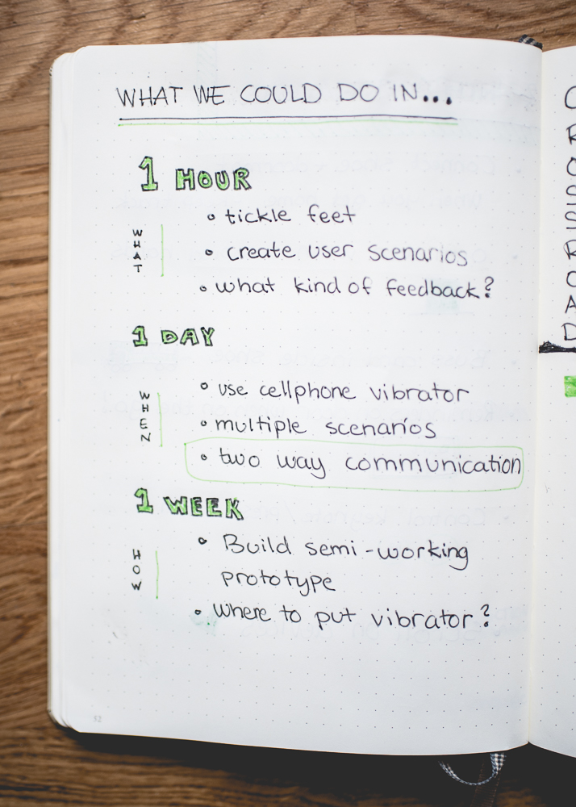

Use vs. MisuseThe Adventure Begins
The scope of this project was to explore the use and misuse of an everyday object and to create a multimedia experience for that object from its properties and affordances.
Before going into our final design path we explored different objects and their use and misuse. This resulted in different paths we could have chosen for our design journey. Suggested objects in our initial brainstorming session were Cup, Wallet, Bike, Lamp, Backpack, and Shoe and after a while of brainstorming further around these object we decided Shoes, Cup and Backpack were our favorite ideas. To see what the possibilities could be for designing something with any of these objects we sketched upon the use and misuses for all these objects. This resulted in shoes being the object with the most possibilities to explore and therefore it got chosen as the object for our design and the journey could move on.

Shoes and solesThe road is made for walking
With shoes as our object we started to map out the properties of the object more thoroughly. By taking both the historical and present perspective into account we defined the primary use of a shoe to be “protection from the outside world”. We decided to define a misuse as a use that isn’t for the purpose of protection, and from that came up with a lot of “misuses” for shoes, both on a micro and macro level. A lot of the discussions revolved around shoes in a social context where it touched upon style, status and personal expression, and also shoes for different activities. We then mapped out the ecosystem of shoes. How the shoe interacts with the feet and the person wearing it, the ground and other surroundings. All of this was presented during our first crit-session.
Even though people often wear shoes we quickly realized that doesn’t necessarily mean the shoes worn are always the same. They change depending on context, personal expression, activity, mood and other external factors. In order to design something flexible we here started exploring possibilities of creating something that could be transferred between all shoes.
Ideas such as integrating chips into shoes were discussed but eventually we decided that a sole would be a good target for the design because of it’s mobility and constant presence. Because of it’s close contact with the foot itself it would also be a good surface for interaction to take place.
InteractionAt a crossroad
At this phase we started exploring and brainstorming a lot around different types of feet interaction. We focused a lot on figuring out what would make sense and what wouldn’t. We call this part of our journey the crossroad between input and output.
We call this part of our journey the crossroad between input and output.The path first touched upon the output road. We explored the possibilities of creating some kind of haptic sole giving the user feedback in different ways depending on situations. As this idea got explored further we ran into some friction regarding this type of interaction. Thoughts about whether or not one want to have a shoe always present and ready to give feedback were asked and for us one important thing for our design came to be to focus on not annoying the user but to instead have the user being able to decide when to interact.
This shifted our focus to the input road instead, letting the user interact with the sole through different commands and this is the path we chose to move forward with. We started to define what body positions a user would be in for the interaction to take place and decided “standing”, “sitting” and “walking” would be the focus for our interaction. We also brainstormed around different situations where the user might want to interact and narrowed these down to “productivity”, “relaxation” and “socialization”.
We continued exploring what “things” a user could want to interact with through the shoes and made use of our diagram to relate this to the positions and situations the user could be in when wanting to interact. The result of this can be seen below.
Of all the alternatives of what to interact with we chose to focus on letting the user interact with a device such as a computer or a mobile through the shoes. As regarding situations and positions we narrowed these down as well and chose the combination of sitting down and being productive. This lead us into another road of brainstorming around final functionalities for this situation.
The ideaHeading towards the finish line
We had many suggestions up for discussion regarding the functionalities for the interaction. These can be seen below.
The suggestion to be able to scroll on a screen through feet interaction was something we found extra interesting because we could relate it to other types of feet interaction already used in other artifacts. Both for cars and sowing machines the feet are used for controlling speed through a pedal. As one of our goals throughout the project was to find an interaction that makes sense to the user and that doesn’t involve inventing new and complex user patterns this idea seemed interesting. We therefore chose to develop it further. To relate it even more to these other types of already existing interactions we also chose to focus our design on being a movement similar to a pedal.
This is where we could start walking the road of exploring technologies to make this design into reality. We started looking into different sensors based on pressure, movement and acceleration as well as bluetooth for making it connect to a device.
Refining idea There were still some questions regarding the design and interaction that we wanted to solve: Why kind of movements for pedaling would make sense? Upwards and downwards? Using pressure? Interacting forwards and backwards with the same foot or with both feet? We did some bodystorming to solve these questions and defined our design further. In the bodystorming we made use of test users to get another perspective than our own and to ground our decisions in their needs.
Prototyping an experienceThe end of one journey and the beginning of another
To illustrate our multimedia experience we chose to create a movie that could focus on showing the interactions and the result of them. We integrated this with different user scenarios and the result can be seen here
A manual of misuse was also created for the multimedia design. This manual goes into detail about the shoe and it’s use and misuse and brings up our new and imagined use of a shoe in the design we have created. It describes the functionalities as well as the technology and can be seen as a manual much like one following any artifact purchased.
Alternative roads we were considering regarding the final design was also to create some kind of physical prototype but since we wanted to focus more on the interaction than the appearance of the sole this became a road left for future exploration.
In parallel with the design process we also wrote an academic paper regarding how to best make use of feet interaction by using this design project as a target for the investigation.
Final thoughtsThe Final Destination
This design process has not been frictionless. It was hard to be creative and think outside the box when we had to start the project with limiting the design to be focused on a certain object from the beginning. We have many times felt lost when trying to find a use for an interactive shoe rather than to focus on finding a problem at first and letting the solution follow.
When defining the use and misuse of a shoe and describing its properties and affordances we that it was almost silly since it felt too basic to be useful at the time. “Doesn’t everyone know what a shoe is?” we many times asked. But as we moved forward in the process we came to find ourselves having more use of this than we would have thought. Breaking any problem down into small parts might make you realize things that wouldn’t have crossed your mind otherwise.
If we were to go through this design journey again we would probably have focused on another object for our design as we have realized that just because shoes are with us at all times (almost) we don’t necessarily want them to be able to do a lot of cool and new things with them. Our biggest challenge have been to find an area of interaction that actually makes sense meanwhile not intruding on the main purpose of the shoe.
Take only memories, leave only footprints. — Chief Seattle